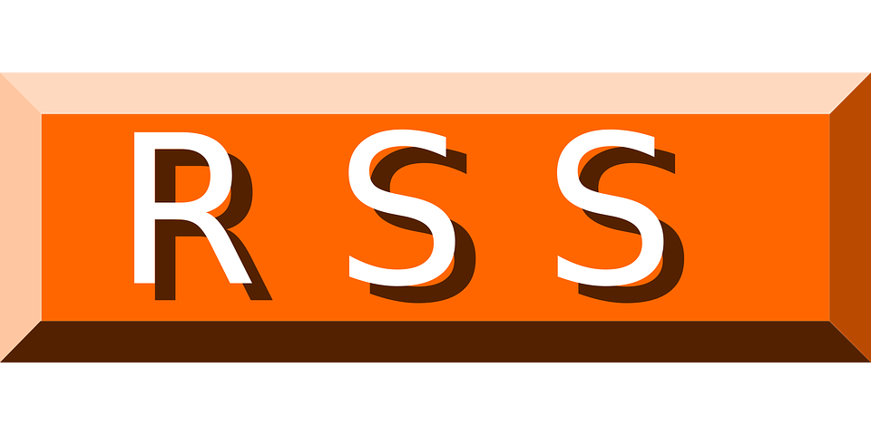

Ejercicios
1º
DAW
Tema 1: Introducción
Tema 2: Lenguajes de Marcas en Entornos Web
Tema 3: HTML
Tema 4: CSS
Tema 5: Diseño Web con CSS
Tema 6: XHTML
Tema 7: XML
Tema 8: XQuery
Proyectos
Córdoba Patrimonio
Las Recetas de la Abuela
Sistemas de planificación de recursos empresariales (ERP)
